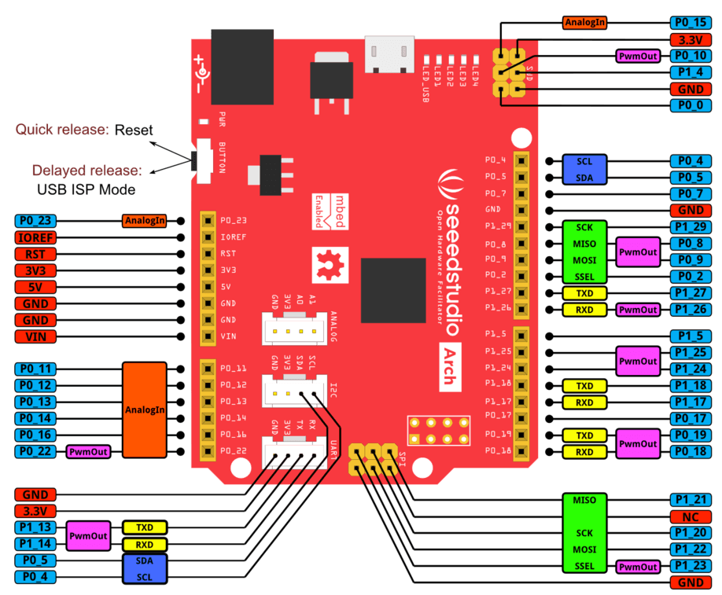
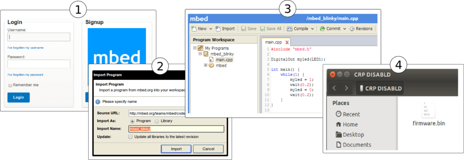

Arch V1.1
Arch V1.1 is an mbed enabled development board with Arduino form factor and Grove connectors for rapid prototyping.
With a variety of Shield and Grove modules, mbed SDK and lots of software libraries, you can rapidly build a prototype.
Model:ARD00800P
Feature
- online development tools
- easy to use C/C++ SDK
- lots of published libraries, projects
- Arduino form factor, three Grove connectors
- available with 3.3V compatible shields
- a large number of grove modules
- Drag-n-drop programming
- NXP LPC11U24 MCU
- Low power ARM Cortex-M0 Core
- 48MHz, 32KB Flash, 8KB RAM, 4KB EEPROM
- USB Device, 2xSPI, UART, I2C
Specification
| Item
|
Typical
|
| Work Voltage
|
7 ~ 12V
|
| Microcontroller
|
LPC11U24
|
| Flash Momery
|
32kB
|
| EEPROM
|
4kB
|
| RAM
|
8kB
|
| UART
|
1
|
| I2C
|
1
|
| ADC Channels
|
8
|
| I/O pins
|
40
|
| Digital I/O Max input voltage
|
5.0V
|
Pinout

There is a monochrome version for you to print.
Version
| Revision
|
Descriptions
|
Release Date
|
| Seeeduino Arch V1.0
|
|
2013-6-17
|
| Arch V1.1
|
- Change name from Seeeduino Arch to Arch
- Switch D13 and D11
- Add one Grove connector
- Remove dual doide
|
|
Get Started

- Click this link to login or signup to mbed
- Import the mbed_blinky program
- Coding! Then you can compile the code and download the output binary.
- Now connect your Arch board to your pc and long press the reset button, it will automatically appear as a USB driver named CRP DISABLD. Go to the CRP DISABLD, delete the firmware file and copy the download binary file to CRP DISABLD. Quick press the reset button to run the new binary.
You can change the code as following and try again.
#include "mbed.h"
BusOut leds(LED1, LED2, LED3, LED4);
int main() {
uint8_t count = 0;
while(1) {
leds = count++;
wait(1);
}
}
Programming Arch on Windows, Linux or Mac
Arch doesn't have an mbed interface. It uses USB In-System-Programming(ISP) to upgrade the firmware.
To enter the USB ISP mode, connect the Arch with your computer and long press its button, and then a disk named "CRP DISABLD" will appear.
- delete firmware.bin in the "CRP DISABLD" disk.
- copy a new firmware into the disk.
- if the disk is not mounted, mount the disk at {mnt_dir}
- dd if={new_firmware.bin} of={mnt_dir}/firmware.bin conv=notrunc
- on mac you'll need to use Terminal to run the following script to copy you're .bin file to your Arch
- dd if={new_firmare.bin} of=/Volumes/CRP\ DISABLD/firmware.bin conv=notrunc
- If you're so inclined, you can also create an Automator application to support drag-and-drop of the file to your board. Just create a "Run Shell Script" with the following command:
- dd if=$* of=/Volumes/CRP\ DISABLD/firmware.bin conv=notrunc
-
- You will also need to change the
"Pass Input" option from "to stdin" to "as arguments"--without this you will get an error "The action 'Run Shell Script' encountered an error" or "dd: no value specified for if (1)" in the log.
-
- Also, an improved form of the script is:
-
dd if="${1}" of=/Volumes/CRP\ DISABLD/firmware.bin conv=notrunc
- Which should handle spaces in the file path and only uses the first file supplied.
Very quick press the button to run the new firmware.
Applications
Resources
Copyright (c) 2008-2016 Seeed Development Limited (
www.seeedstudio.com /
www.seeed.cc)
This static html page was created from http://www.seeedstudio.com/wiki
{kind=link}